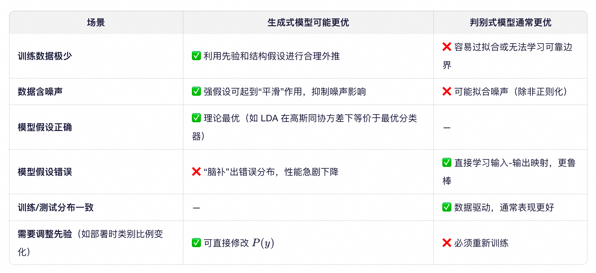
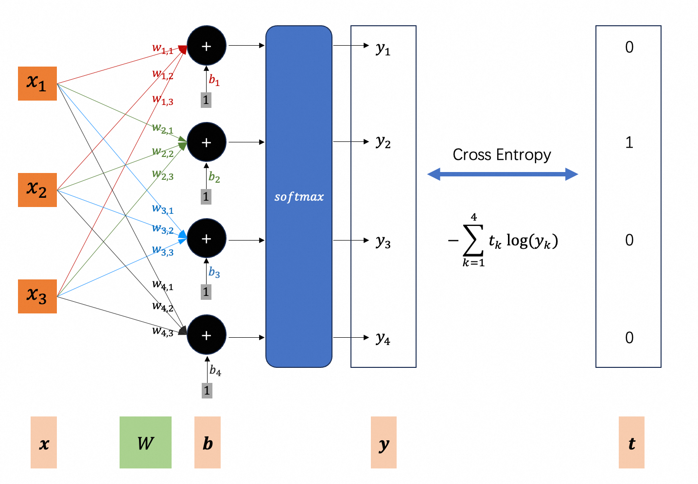

机器学习主要分为监督学习（Supervised Learning）、无监督学习（Unsupervised Learning）、强化学习（Reinforcement Learning）以及半监督学习（Semi-supervised Learning）等范式。
监督学习主要包括两大类基础任务：回归（Regression）和分类（Classification）。回归用于预测连续值（输出为实数），分类则用于预测离散类别标签（输出为有限集合中的某个类别）。此外，结构化学习（Structured Learning）是一类更复杂的监督学习任务，其输出是具有内部结构的对象（如序列、树等），可视为分类或回归的高维扩展。
在分类任务中，模型可分为生成式模型（Generative Models）和判别式模型（Discriminative Models）。生成式模型通过对联合分布 P(x,y) 建模来实现分类，典型方法包括高斯判别分析（GDA）及其两种常见形式——假设协方差矩阵共享的线性判别分析（LDA）和允许协方差矩阵独立的二次判别分析（QDA），以及朴素贝叶斯等。判别式模型则直接建模条件分布 P(y∣x)，代表方法有逻辑回归（Logistic Regression）、支持向量机（SVM）等。
本文将简要介绍逻辑回归 Logistic Regression。
问题设定 (1)
训练数据为一组带标签的样本。
对象：由 $d$ 个连续特征描述，表示为特征向量 $\boldsymbol{x} \in \mathbb{R}^d$；
标签：样本所属的类别，记为 $y$，其中 $y \in {c_1, c_2, \dots, c_K}$（离散变量，共 $K$ 个类别）后文使用$k$表示一个具体的类别，$y$表示类别变量；
样本：一个对象及其所属的类别构成一个样本，记为 $(\boldsymbol{x}_i, y_i)$；
样本集：给定 $N$ 个独立同分布的训练样本
$$
(\boldsymbol{x}_1, y_1),\ (\boldsymbol{x}_2, y_2),\ \dots,\ (\boldsymbol{x}_N, y_N)
$$
其中 $\boldsymbol{x}_i \in \mathbb{R}^d$ 是第 $i$ 个样本的特征向量，$y_i$ 是其对应的类别标签。
注：下标 $i$ 表示样本索引，而非向量分量；向量 $\boldsymbol{x}_i$ 的第 $j$ 个分量记为 $x_{ij}$。
任务：学习一个分类模型，使其能够对新的输入 $\boldsymbol{x}_{\text{new}}$ 预测其所属类别 $y$。
核心思想 (2)
在上一章中，LDA（Linear Discriminant Analysis）通过训练样本，估计每个类别 $k$ 的先验概率 $\pi_k$、均值向量 $\boldsymbol{\mu}_k$ 以及所有类别共享的协方差矩阵 $\boldsymbol{\Sigma}$，然后根据贝叶斯公式计算新特征向量的后验概率。
据其第7节可知，后验概率可表示为：
$$
P(y \mid \boldsymbol{x}) = \operatorname{softmax}(\boldsymbol{z})
$$
其中，
$$
\boldsymbol{z} =
\boldsymbol{W}\boldsymbol{x} + \boldsymbol{b} = \begin{bmatrix}
\boldsymbol{w}_1^\top \boldsymbol{x} + b_1 \\
\boldsymbol{w}_2^\top \boldsymbol{x} + b_2 \\
\vdots \\
\boldsymbol{w}_K^\top \boldsymbol{x} + b_K
\end{bmatrix} \in \mathbb{R}^K
$$
对所有 $k \in 1, 2, \dots, K$，$\boldsymbol{w}_k$ 和 $b_k$ 由 $\pi_k$、$\boldsymbol{\mu}_k$ 和 $\boldsymbol{\Sigma}$ 解析确定。
既然如此，何不跳过对数据生成过程的假设（如特征服从高斯分布），直接假设后验概率具有这种 softmax 形式，并将 $\boldsymbol{w}_k$、$b_k$ 视为待学习的参数？
这正是逻辑回归（Logistic Regression）的核心思想：它是一种判别式模型，直接对条件概率 $P(y \mid \boldsymbol{x})$ 建模，并通过最大似然估计（等价于最小化交叉熵 Cross Entropy）从数据中学习参数。
二分类 (3)
现在，我们完全放弃生成式假设（如类别先验 $\pi_k$、均值向量 $\boldsymbol{\mu}_k$、共享协方差矩阵 $\boldsymbol{\Sigma}$），转而直接通过数据学习条件概率 $P(y \mid \boldsymbol{x})$。
定义模型（function set）(3.1)
考虑二分类问题，类别标签 $y \in {1, 2}$，只需建模一个类别（例如 $y=1$）的概率：
$$
P_{\boldsymbol{w},b}(y=1 \mid \boldsymbol{x}) = \sigma(z) = \frac{1}{1+e^{-z}}
$$
其中 $z$ 叫做线性得分（logit），是未经过 sigmoid（softmax，在多分类场景下）归一化的原始输出：
$$
z = \boldsymbol{w}^\top \boldsymbol{x} + b = \sum_{h=1}^d w_h x_h + b
$$
因此，模型（function set）可显式写为：
$$
P_{\boldsymbol{w},b}(y=1 \mid \boldsymbol{x}) = \frac{1}{1+e^{-(\boldsymbol{w}^\top \boldsymbol{x} + b)}} =
\frac{1}{1+e^{-(\sum_{h=1}^d w_h x_h + b)}}
$$
符号说明：
- 黑体 $\boldsymbol{x}$ 表示任意特征向量（任意样本的特征）。
- 黑体 $\boldsymbol{x}_i$ 表示第 $i$ 个特征向量（第 $i$ 个样本的特征），其中 $i \in 1, 2, \dots, N$ ；仍是向量，使用黑体表示。
- 任意特征向量 $\boldsymbol{x}$ 的第 $h$ 个分量，是标量，使用非黑体 $x_h$ 表示； 其中 $h \in 1, 2, \dots, d$，因为样本包含 $d$ 个特征，即特征向量是 $d$ 维。
- 第 $i$ 个特征向量的第 $h$ 个分量，是标量，使用非黑体 $x_{ih}$ 表示。
定义损失函数（3.2）
假设训练样本：
$$
(\boldsymbol{x}_1, y=1),\ (\boldsymbol{x}_2, y=1),\ (\boldsymbol{x}_3, y=2),\ \dots,\ (\boldsymbol{x}_N, y=1)
$$
所以：
- $\boldsymbol{x}_1$ 属于类别1；模型算得它属于类别1的概率是 $P_{\boldsymbol{w},b}(y=1 \mid \boldsymbol{x}_1)$，越大说明模型对样本$1$ 越友好；
- $\boldsymbol{x}_2$ 属于类别1；模型算得它属于类别1的概率是 $P_{\boldsymbol{w},b}(y=1 \mid \boldsymbol{x}_2)$，越大说明模型对样本$2$ 越友好；
- $\boldsymbol{x}_3$ 属于类别2；模型算得它属于类别1的概率是 $1 - P_{\boldsymbol{w},b}(y=1 \mid \boldsymbol{x}_3)$，越大说明模型对样本$3$ 越友好；
- …
- $\boldsymbol{x}_N$ 属于类别1；模型算得它属于类别1的概率是 $P_{\boldsymbol{w},b}(y=1 \mid \boldsymbol{x}_N)$，越大说明模型对样本$N$ 越友好；
显然，对所有样本越友好，模型就越优秀。也就是，它们的联合概率越大，Loss越低。
联合概率：
$$
P_{\boldsymbol{w},b}(y=1 \mid \boldsymbol{x}_1) \cdot P_{\boldsymbol{w},b}(y=1 \mid \boldsymbol{x}_2) \cdot (1 - P_{\boldsymbol{w},b}(y=1 \mid \boldsymbol{x}_3)) \cdot \dots \cdot P_{\boldsymbol{w},b}(y=1 \mid \boldsymbol{x}_N)
$$
联合概率（越大越好）取负号后再取自然对数，就变成Loss（越小越好）：
$$
L_{\boldsymbol{w},b} = -\log \left[ P_{\boldsymbol{w},b}(y=1 \mid \boldsymbol{x}_1) \cdot P_{\boldsymbol{w},b}(y=1 \mid \boldsymbol{x}_2) \cdot (1 - P_{\boldsymbol{w},b}(y=1 \mid \boldsymbol{x}_3)) \cdot \dots \cdot P_{\boldsymbol{w},b}(y=1 \mid \boldsymbol{x}_N) \right]
$$
展开：
$$
\begin{aligned}
& L_{\boldsymbol{w},b} = \\
& \quad \quad -\log P_{\boldsymbol{w},b}(y=1 \mid \boldsymbol{x}_1) \\
& \quad \quad -\log P_{\boldsymbol{w},b}(y=1 \mid \boldsymbol{x}_2) \\
& \quad \quad -\log \left(1 - P_{\boldsymbol{w},b}(y=1 \mid \boldsymbol{x}_3) \right) \\
& \quad \quad \dots \\
& \quad \quad -\log P_{\boldsymbol{w},b}(y=1 \mid \boldsymbol{x}_N)
\end{aligned}
$$
这里做一个符号上的转换，引入一个表示类别的变量 $t$ （其实当初直接把 $y$ 的取值定义为 ${1, 0}$ 就不需要此转换了）：
- 若 $y_i=1$（即 $\boldsymbol{x}_i$ 属于类别1），则 $t_i=1$；
- 若 $y_i=2$（即 $\boldsymbol{x}_i$ 属于类别2），则 $t_i=0$；
于是，无论 $\boldsymbol{x}_i$ 属于那一类，都可以统一形式：
$$
-\left[ t_i \log P_{\boldsymbol{w},b}(y=1 \mid \boldsymbol{x}_i) + (1 - t_i) \log (1 - P_{\boldsymbol{w},b}(y=1 \mid \boldsymbol{x}_i)) \right]
$$
明显，若 $\boldsymbol{x}_i$ 属于类别1，则$1-t_i=0$，即后半部分为0；否则，前半部分为0；
即：
$$
\begin{aligned}
& L_{\boldsymbol{w},b} = \\
& \quad \quad -\left[ t_1 \log P_{\boldsymbol{w},b}(y=1 \mid \boldsymbol{x}_1) + (1 - t_1) \log (1 - P_{\boldsymbol{w},b}(y=1 \mid \boldsymbol{x}_1)) \right] \\
& \quad \quad -\left[ t_2 \log P_{\boldsymbol{w},b}(y=1 \mid \boldsymbol{x}_2) + (1 - t_2) \log (1 - P_{\boldsymbol{w},b}(y=1 \mid \boldsymbol{x}_2)) \right] \\
& \quad \quad \dots \\
& \quad \quad -\left[ t_N \log P_{\boldsymbol{w},b}(y=1 \mid \boldsymbol{x}_N) + (1 - t_N) \log (1 - P_{\boldsymbol{w},b}(y=1 \mid \boldsymbol{x}_N)) \right]
\end{aligned}
$$
即：
$$
L_{\boldsymbol{w},b} = \sum_{i=1}^N -\left[ t_i \log P_{\boldsymbol{w},b}(y=1 \mid \boldsymbol{x}_i) + (1 - t_i) \log (1 - P_{\boldsymbol{w},b}(y=1 \mid \boldsymbol{x}_i)) \right]
$$
再除以 $N$，并把负号放在前面，Loss 函数正式定义为：
$$
\mathcal{L}(\boldsymbol{w}, b) = - \frac{1}{N} \sum_{i=1}^N \left[ t_i \log P_{\boldsymbol{w},b}(y=1 \mid \boldsymbol{x}_i) + (1 - t_i) \log (1 - P_{\boldsymbol{w},b}(y=1 \mid \boldsymbol{x}_i)) \right]
$$
简记为：
$$
\mathcal{L}(\boldsymbol{w}, b) = - \frac{1}{N} \sum_{i=1}^N \left[ t_i \log p_i + (1 - t_i) \log (1 - p_i) \right]
$$
其中，
$$
p_i = P_{\boldsymbol{w},b}(y=1 \mid \boldsymbol{x}_i)
$$
说明：此即二元交叉熵（Binary Cross-Entropy）；即证明了：最大化似然（Likelihood） ，也叫最大似然估计（MLE, Maximum Likelihood Estimation） 等价于 最小化交叉熵（Cross Entropy）。
交叉熵 (3.4)
给定一个特征向量 $\boldsymbol{x}$，其所属类别的真实分布为 $t(y \mid \boldsymbol{x})$，模型预测的类别分布为 $p(y \mid \boldsymbol{x})$；其中 $y \in 1, 2, \dots, K$ 表示 $K$ 个可能的类别。则该样本的交叉熵定义为：
$$
H(t, p) = - \sum_{k=1}^K t(k \mid \boldsymbol{x}) \log p(k \mid \boldsymbol{x})
$$
在监督分类任务中，真实分布 $t(y \mid \boldsymbol{x})$ 通常是 one-hot 分布，即：
$$
\begin{aligned}
t_k =
\begin{cases}
1, & \quad \text{若 } \boldsymbol{x} \text{ 的实际类别为 } k\\
0, & \quad \text{否则}
\end{cases}
\end{aligned}
$$
例如，前文的训练样本，
- $(\boldsymbol{x}_1, y=1)$ 的类别的真实分布是 $(1, 0)$；模型预测分布是$(p_1, 1 - p_1)$；交叉熵是 $-\big(1 \cdot \log p_1 + 0 \cdot \log(1 - p_1)\big)$；
- $(\boldsymbol{x}_2, y=1)$ 的类别的真实分布是 $(1, 0)$；模型预测分布是$(p_2, 1 - p_2)$；交叉熵是 $-\big(1 \cdot \log p_2 + 0 \cdot \log(1 - p_2)\big)$；
- $(\boldsymbol{x}_3, y=2)$ 的类别的真实分布是 $(0, 1)$；模型预测分布是$(p_3, 1 - p_3)$；交叉熵是 $-\big(0 \cdot \log p_3 + 1 \cdot \log (1 - p_3)\big)$；
- …
其中 $p_i$ 表示模型预测的特征向量 $\boldsymbol{x}_i$ 属于类别1的概率；显然 $(1 - p_i)$ 表示模型预测的特征向量 $\boldsymbol{x}_i$ 属于类别2的概率。
实际应用中，模型预测值需满足 $p_i \in (0, 1)$（从而 ($1 - p_i) \in (0, 1)$），以保证 $\log p_i$ 和 $\log (1 - p_i)$ 有定义。通常通过 sigmoid（二分类）或 softmax（多分类）实现。
注意观察：对于 one-hot分布，交叉熵等价于 $-log(\text{模型预测特征向量属于实际类别的概率})$；因为真实分布中，其它类别的概率为0，在 sum 中不作贡献。
- $(\boldsymbol{x}_1, y=1)$ 的交叉熵是 $-\log p_1$；实际类别是类别1，预测类别1概率是$p_1$;
- $(\boldsymbol{x}_2, y=1)$ 的交叉熵是 $-\log p_2$；实际类别是类别1，预测类别1概率是$p_2$;
- $(\boldsymbol{x}_3, y=2)$ 的交叉熵是 $-\log (1 - p_3)$；实际类别是类别2，预测类别2概率是$1 - p_3$;
- …
所以，前一节中定义的损失函数，
$$
\mathcal{L}(\boldsymbol{w}, b) = - \frac{1}{N} \sum_{i=1}^N \left[ t_i \log p_i + (1 - t_i) \log (1 - p_i) \right]
$$
就是所有样本的平均交叉熵。
该形式可自然推广至多分类情形：若实际类别为 $k^*$，则交叉熵为 $-\log p(k^* \mid \boldsymbol{x})$。
在信息论中，交叉熵表示用错误模型 $p$ 去编码真实数据 $t$ 所需的平均比特数。
在分类任务中，交叉熵表示模型预测分布与真实 one-hot 分布之间的差距。
可以使用均方误差（MSE, Mean Square Error）替换交叉熵吗？
$$
L_{mse} = \frac{1}{N} \sum_{i=1}^N (t_i - p_i)^2
$$
这个公式“数学上”完全可以计算。但它不适合用于训练逻辑回归这样的分类模型，原因主要是：
- 梯度性质差：Sigmoid 函数的输出范围是 (0,1)，其导数在两端（接近 0 或 1）非常小。在距离最优解很远的地方，梯度很差。
- 统计假设不匹配：平方误差假设观测值服从高斯分布，这在二分类（标签为 0/1）中不合理。前面在二分类场景下，证明了最大化似然函数等价于最小化交叉熵。
最小化损失函数 (3.5)
采用梯度下降法（Gradient Descent）来最小化损失函数：
$$
\mathcal{L}(\boldsymbol{w}, b) = - \frac{1}{N} \sum_{i=1}^N \left[ t_i \log p_i + (1 - t_i) \log (1 - p_i) \right]
$$
其中：
$$
\begin{aligned}
& p_i = P_{\boldsymbol{w},b}(y=1 \mid \boldsymbol{x}_i) = \sigma(z_i) \\
& z_i = \boldsymbol{w}^\top \boldsymbol{x}_i + b = \sum_{h=1}^d w_h x_{ih} + b \\
& \sigma(z) = \frac{1}{1+e^{-z}} \text{ 是sigmoid函数}
\end{aligned}
$$
代入训练样本之后，$\mathcal{L}$的变量只剩下 $d$ 维权重向量 $\boldsymbol{w}$ 和偏置标量 $b$。记为：
$$
\boldsymbol{\theta} = (w_1, w_2, \dots, w_d, b)
$$
由于所有权重分量 $w_h$ 在模型中地位对称，它们的偏导数具有相同形式。因此，只需推导两类偏导数：
- 对任意 $w_h$，$h \in 1, 2, \dots, d$
- 对偏置 $b$
过程复杂，待学习。
$$
\begin{aligned}
& \frac{\partial \mathcal{L}(\boldsymbol{w}, b)}{\partial w_h} = \frac{1}{N} \sum_{i=1}^N (p_i - t_i) x_{ih} \\
& \frac{\partial \mathcal{L}(\boldsymbol{w}, b)}{\partial b} = \frac{1}{N} \sum_{i=1}^N (p_i - t_i)
\end{aligned}
$$
梯度下降：
$$
\begin{aligned}
& w_{h}^{t+1} = w_{h}^t - \eta \cdot \frac{1}{N} \sum_{i=1}^N (p_i - t_i) x_{ih} \\
& b^{t+1} = b^t - \eta \cdot \frac{1}{N} \sum_{i=1}^N (p_i - t_i)
\end{aligned}
$$
其中 $\eta$ 是 learning rate；
参数更新是什么意思呢？直观解释是，误差驱动学习。主要看 $p_i - t_i$，它表示模型预测概率 $p_i$ 与真实标签 $t_i \in 1, 0$ 之间的误差。误差越大，参数调整幅度越大。这体现了误差反向传播的核心思想：模型通过“哪里错了、错得多严重”来指导自身修正。
生成式 vs 判别式 (4)
事实上，生成式模型LDA 和判别式模型 Logistic Regression 的 function set 是一样的：
$$
P(y=1 \mid \boldsymbol{x}) = \sigma(\boldsymbol{w}^\top \boldsymbol{x} + b)
$$
- 生成式模型LDA：先计算 $\pi_k$、$\boldsymbol{\mu}_k$、$\boldsymbol{\Sigma}$，再算出参数 $\boldsymbol{w}$ 和 $b$；
- 判别式模型Logistic Regression：直接寻找（学习）$\boldsymbol{w}$ 和 $b$；
不过，通过这两种方法，找到的 $\boldsymbol{w}$ 和 $b$ 通常是不一样的（从function set中找到的function不是同一个），因为做的假设不一样：
- 在生成式模型LDA中，假设每个类别的样本服从高斯分布（也可以是别的，例如伯努利分布，朴素贝叶斯等；下面有个例子就是朴素贝叶斯）。
- 在Logistic Regression中没有做任何假设。
那么个更好呢？一般来说，Logistic Regression会更好。举个例子。
训练样本（13个）：
$$
\left[(1,1), y=1 \right] \quad \quad \text{1个} \\
\left[(1,0), y=2 \right] \quad \quad \text{4个} \\
\left[(0,1), y=2 \right] \quad \quad \text{4个} \\
\left[(0,0), y=2 \right] \quad \quad \text{4个}
$$
假如让人来学习，$\boldsymbol{x}_{\text{new}} = (1,1)$ 应该属于类别1还是类别2呢？那肯定是类别1（$y=1$）。
但是使用生成式，根据贝叶斯公式：
$$
P(y=1 \mid \boldsymbol{x}_{\text{new}}) = \frac{P(y=1) P(\boldsymbol{x}_{\text{new}} \mid y=1)}{P(\boldsymbol{x}_{\text{new}})}
$$
再根据全概率公式：
$$
P(\boldsymbol{x}_{\text{new}}) = P(y=1) P(\boldsymbol{x}_{\text{new}} \mid y=1) + P(y=2) P(\boldsymbol{x}_{\text{new}} \mid y=2)
$$
由训练样本知：
$$
\begin{aligned}
& P(y=1) = \frac{1}{13} \\
& P(y=2) = \frac{12}{13}
\end{aligned}
$$
要计算 $P(\boldsymbol{x}_{\text{new}} \mid y=1)$ 和 $P(\boldsymbol{x}_{\text{new}} \mid y=2)$，这里再引入一个假设：特征向量的两个维度独立（即两个维度完全不相关）。注意：这实际上是朴素贝叶斯（Naive Bayes），而不是标准的LDA（Linear Discriminant Analysis）。
- 在类别1中，$x_1$（维度1）为1的概率是1，$x_2$（维度2）为1的概率也是1；所以，在类别1中，出现 $(1,1)$ 的概率是1；
- 在类别2中，$x_1$（维度1）为1的概率是$\frac{4}{12}$，$x_2$（维度2）为1的概率也是$\frac{4}{12}$；所以，在类别2中，出现 $(1,1)$ 的概率是$\frac{1}{9}$；
也就是，
$$
\begin{aligned}
& P(\boldsymbol{x}_{\text{new}} \mid y=1) = 1 \\
& P(\boldsymbol{x}_{\text{new}} \mid y=2) = \frac{1}{9}
\end{aligned}
$$
所以，
$$
P(y=1 \mid \boldsymbol{x}_{\text{new}}) = \frac{\frac{1}{13} \times 1}{\frac{1}{13} \times 1 + \frac{12}{13} \times \frac{1}{9}} = \frac{3}{7} = 0.4286 \lt 0.5
$$
因此，生成式模型（此处为朴素贝叶斯）会被判定为类别2！这和直觉是相反的。
原因在于生成式模型依赖对 $P(\boldsymbol{x} \mid y)$ 的建模假设：
- 先验主导：由于类别2的先验概率很高（$\frac{12}{13}$），即使似然较低，后验仍可能更大。
- 特征独立假设（朴素贝叶斯）：在类别2中，虽然没有样本是 $(1,1)$，但模型认为有 $\frac{1}{9}$ 的概率会出现；只是采用不够多，没有采到而已。叠加上类别2的先验概率高，模型就认为它属于类别2（虽然选中类别1时，$(1,1)$ 被产生的概率很高，但是类别1被选中的概率很低）。
根本原因是，生成式模型对数据生成过程做了强假设，并据此“脑补”未观测到的可能性。这通常不是一件好的事情。
但在训练数据比较少的时候，也可能优于判别式。判别式没有做任何假设，只是看着训练数据说话，受训练数据影响更大。生成式有时会忽视数据，而尊从它的假设。
当训练数据noise比较大，生成式也可能表现更好：那些假设可能把noise忽略掉。

总结：
- 生成式模型：“用理论解释数据”——通过假设生成机制来填补数据空白，假设“理解世界”。在小样本、高噪声、或生成机制确知的场景下，这种“脑补”恰恰是优势。但若假设失真，反而会“聪明反被聪明误”。
- 判别式模型：“看数据说话”——忠实地拟合训练样本中的输入-输出关系，通过数据“描述边界”，不做关于数据如何生成的假设。
多分类 (5)
定义模型（function set）(5.1)
根据上一章第7节可知，模型可以表示成如下形式：
$$
P(y \mid \boldsymbol{x}) = \operatorname{softmax}(\boldsymbol{z})
$$
其中，
$$
\boldsymbol{z} =
\boldsymbol{W}\boldsymbol{x} + \boldsymbol{b} = \begin{bmatrix}
\boldsymbol{w}_1^\top \boldsymbol{x} + b_1 \\
\boldsymbol{w}_2^\top \boldsymbol{x} + b_2 \\
\vdots \\
\boldsymbol{w}_K^\top \boldsymbol{x} + b_K
\end{bmatrix} \in \mathbb{R}^K
$$
现在，和二分类一样，完全放弃生成式假设（类别先验 $\pi_k$、均值向量 $\boldsymbol{\mu}_k$、共享协方差矩阵 $\boldsymbol{\Sigma}$），采用判别式方法，直接学习输入特征向量 $\boldsymbol{x}$ 到类别分布 $P(y \mid \boldsymbol{x})$ 的映射，无需建模联合分布 $P(\boldsymbol{x}, y)$。
注意：二分类中，一直针对 $y=1$ 这一个类别，所以只有一个 $\boldsymbol{w}$ 和 一个 $b$。多分类中，每个类别都有自己的 $\boldsymbol{w}_j$ 和 $b_j$；$j=1, 2, \dots, K$（共 $K$ 个类别）。
定义损失函数（5.2）
给定训练集：
$$
(\boldsymbol{x}_1, y_1) \\
(\boldsymbol{x}_2, y_2) \\
(\boldsymbol{x}_3, y_3) \\
\dots \\
(\boldsymbol{x}_N, y_N)
$$
其中真实标签 $y_i \in 1, 2, \dots, K$。
我们使用 交叉熵 作为损失函数。首先，将真实标签转换为 one-hot 向量 $\boldsymbol{t}_i \in {0,1}^K$：
$$
\begin{aligned}
t_{ik} =
\begin{cases}
1, & \text{若 } y_i = k \\
0, & \text{否则}
\end{cases}
\end{aligned}
$$
说明：$\boldsymbol{t}_i$ 是一个 $K$ 维向量，表示样本 $\boldsymbol{x}$ 分别属于 $K$ 个类别的概率，即 $t_{ik}$ 表示样本 $\boldsymbol{x}_i$ 属于类别 $k$ 的概率。这是实际分布，故只有 $k=y_i$ 的那一项为1，其它为0；显然满足：$\sum_{k=1}^K t_{ik}=1$
模型对样本 $\boldsymbol{x}_i$ 的预测分布为：
$$
\boldsymbol{p}_i = \operatorname{softmax}(\boldsymbol{W}\boldsymbol{x}_i + \boldsymbol{b}) \in (0,1)^K
$$
说明：$\boldsymbol{p}_i$ 也是一个 $K$ 维向量，表示模型预测样本 $\boldsymbol{x}$ 分别属于 $K$ 个类别的概率，即 $p_{ik}$ 表示模型预测样本 $\boldsymbol{x}_i$ 属于类别 $k$ 的概率。满足：$\sum_{k=1}^K p_{ik}=1$
则第 $i$ 个样本的交叉熵为：
$$
H(\boldsymbol{t}_i, \boldsymbol{p}_i) = -\sum_{k=1}^K t_{ik} \log p_{ik}
$$
由于 $\boldsymbol{t}_i$ 是 one-hot，上式等价于：
$$
H(\boldsymbol{t}_i, \boldsymbol{p}_i) = -\log p_{i y_i}
$$
即：负的模型对真实类别 $y_i$ 的预测概率的对数。
换言之：$-log(\text{模型预测特征向量属于实际类别的概率})$
因此，整个训练集的平均交叉熵损失为：
$$
\mathcal{L}(\boldsymbol{W}, \boldsymbol{b}) = -\frac{1}{N} \sum_{i=1}^N \log p_{i y_i}
$$
其中，
$$
p_{i y_i} = \frac{\exp(\boldsymbol{w}_{y_i}^\top \boldsymbol{x}_i + b_{y_i})}{\sum_{k=1}^K \exp(\boldsymbol{w}_k^\top \boldsymbol{x}_i + b_k)}
$$
注意：$y_i$ 代表样本 $\boldsymbol{x}_i$ 的实际所属类别，和 $k$ 类型相同。
该损失函数也称为 softmax loss 或 multinomial logistic loss，是多分类任务的标准目标函数。

最小化损失函数 (5.3)
最小化损失函数，就是优化模型参数。我们将所有可学习参数整理为一个参数向量：
$$
\boldsymbol{\theta} = \big(
w_{11}, w_{12}, \dots, w_{1d},;
w_{21}, w_{22}, \dots, w_{2d},;
\dots,;
w_{K1}, w_{K2}, \dots, w_{Kd},;
b_1, b_2, \dots, b_K
\big)
$$
其中：
- $w_{kh}$ 表示第 $k$ 个类别的权重向量 $\boldsymbol{w}_k$ 的第 $h$ 个分量；$k = 1, 2, \dots, K$；$h = 1, 2, \dots, d$；
- $b_k$ 表示第 $k$ 个类别的偏置项；
目标是最小化平均交叉熵损失函数：
$$
\mathcal{L}(\boldsymbol{\theta}) = -\frac{1}{N} \sum_{i=1}^N \log p_{i y_i}
$$
其中 $p_{i y_i} = P_{\boldsymbol{\theta}}(y = y_i \mid \boldsymbol{x}_i)$ 由 softmax 模型给出。
为此，需计算损失函数对每一个标量参数的偏导数。
与二分类场景类似，在多分类 softmax 模型中：
- 所有权重分量 $w_{kh}$（固定 $k$，变化 $h$）在模型中地位对称，其偏导数具有相同形式；
- 所有偏置项 $b_k$（不同类别）也具有统一的偏导结构。
因此，只需推导以下两类典型偏导数。待学习，以下由AI给出（待验证）。
$$
\begin{aligned}
& \frac{\partial \mathcal{L}(\boldsymbol{\theta})}{\partial w_{kh}} = \frac{1}{N} \sum_{i=1}^N (p_{ik} - t_{ik}) x_{ih} \\
& \frac{\partial \mathcal{L}(\boldsymbol{\theta})}{\partial b_k} = \frac{1}{N} \sum_{i=1}^N (p_{ik} - t_{ik})
\end{aligned}
$$
逻辑回归的局限性 (6)
考虑二分类场景下的 4 个样本（输入为二维特征，标签为类别）：
$$
\begin{aligned}
& \boldsymbol{x}_1 = (1,1), \quad y=1 \\
& \boldsymbol{x}_2 = (1,0), \quad y=2 \\
& \boldsymbol{x}_3 = (0,1), \quad y=2 \\
& \boldsymbol{x}_4 = (0,0), \quad y=1
\end{aligned}
$$
逻辑回归模型的形式为：
$$
P_{\boldsymbol{w},b}(y=1 \mid \boldsymbol{x}) = \sigma(\boldsymbol{w}^\top \boldsymbol{x} + b)
$$
无论 $\boldsymbol{w}$ 和 $b$ 取何值，都无法将这4个样本分开，这是典型的XOR型（“异或”型）线性不可分问题，而决策边界 $\boldsymbol{w}^\top \boldsymbol{x} + b$ 是一条直线。
如何突破线性限制？一种办法是对原始特征进行非线性变换（feature transformation）。例如把 $\boldsymbol{x}_i$ （$i=1, 2, 3, 4$）做如下转换：
$$
\begin{aligned}
& x_{i1}^{\prime} = \text{distance from } \boldsymbol{x}_i \text{ to } (0, 0) = \sqrt{x_{i1}^2 + x_{i2}^2} \\
& x_{i2}^{\prime} = \text{distance from } \boldsymbol{x}_i \text{ to } (1, 1) = \sqrt{(x_{i1}-1)^2 + (x_{i2}-1)^2}
\end{aligned}
$$
则 4 个样本在新空间中变为：
$$
\begin{aligned}
& \boldsymbol{x}_1^{\prime} = (\sqrt{2},0), \quad y=1 \\
& \boldsymbol{x}_2^{\prime} = (1,1), \quad y=2 \\
& \boldsymbol{x}_3^{\prime} = (1,1), \quad y=2 \\
& \boldsymbol{x}_4^{\prime} = (0,\sqrt{2}), \quad y=1
\end{aligned}
$$
现在，类别1的点落在坐标轴两端，类别2的点重合在 $(1,1)$。此时，存在一条直线可以将它们分开，逻辑回归就能有效工作。
如何设计这样的变换？依赖人工构造特征既困难又不通用。于是我们想到：能否让模型自己学习合适的特征表示？答案是：使用多层结构！
- 前面的层（隐藏层）可以看作在自动学习非线性特征变换；
- 最后一层（输出层）仍是一个逻辑回归单元，负责最终分类；
这正是多层感知机（MLP）——通过堆叠多个带非线性激活的线性变换，模型能学习复杂的决策边界，从而解决”异或”模式等线性不可分问题。
注意：这时的模型已经不是逻辑回归了，而是一个多层神经网络。逻辑回归特指没有隐藏层的单层模型。
小结 (7)
逻辑回归（Logistic Regression）是一种直接对条件概率建模的分类方法。
它的核心思想是：不关心输入特征向量 $\boldsymbol{x}$ 本身的分布，而是直接学习“给定 $\boldsymbol{x}$ 时，属于某个类别的概率”，即建模 $P(y \mid \boldsymbol{x})$。
- 在二分类中，用 sigmoid 函数将线性得分（logit）映射到 (0,1) 区间；
- 在多分类中，用 softmax 函数将多个线性得分（logit）转换为归一化的类别概率。
模型输出具有明确的概率解释，可用于分类决策（如取最大概率），也可用于风险评估（如预测患病概率为 85%）。
关键特点：逻辑回归是判别式模型（discriminative model）——它只关注如何从输入“判别”出输出，而不试图描述数据是如何生成的。
这与生成式模型（如 LDA）形成鲜明对比：
- LDA 先假设每个类别的特征服从某种分布（如高斯分布），再用贝叶斯公式推导出 $P(y \mid \boldsymbol{x})$；
- 而逻辑回归跳过生成过程，直接拟合决策边界对应的概率。
因此，逻辑回归更灵活、对分布假设更少，在实践中常表现稳健，是分类任务中的基础工具之一。